Probability Theory
Table of Contents
1 概率简介
1.1 概率论问题
1.2 概率的概念
1.2.1 现象和事件
- 决定性现象
某些现象的结果必然会发生，或者必然不会发生,这种现象称为 决定性现象 ， 是概率论以外的数学分支研究的对象。- 在一定条件下必然会发生的事件称为 必然事件 ，用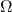 来表示。
- 在一定条件下必然不会发生的事件称为 不可能事件 ，用
 来表示。
来表示。
必然事件和不可能事件实质上是相同的，都属于 决定性事件
- 随机现象
然而有些现象的结果呈现偶然性，称为 随机现象 ，是概率论研究 的对象。随机现象中可能出现的结果成为 随机事件 ， 简称 事件 ，一般 用大写字母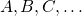 来表示。
1.2.2 频率和概率
为了得到关于随机事件的规律，我们需要对随机现象进行观察和试验。 随机事件在某次试验或观察中可能发生，但是在大量的试验中却呈现 出明显的规律性，这说明随机事件有其偶然性的一面，也有其必然性 的一面，因此也就有可能对其规律性展开研究。
- 频率
对于随机事件
 ，若在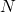 次试验中出现了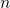 次，则称：
，若在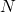 次试验中出现了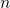 次，则称：
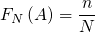
为随机事件
在 次试验中出现的 频率
- 频率的性质
由频率的定义不难得出：
- 频率的非负性
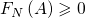
- 必然事件频率为1
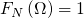
- 频率的可加性: 对于不可能同时发生的事件
 和
和  称为 不相容事件,用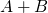 表
示
称为 不相容事件,用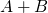 表
示 或者
或者  至少出现其中之一的事件，则有：
至少出现其中之一的事件，则有：
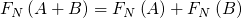
由上述基本性质有：
- 不可能事件频率为0
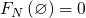
- 频率不大于1
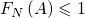
- 有限两两不相容事件的 频率的可加性
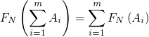
- 频率的非负性
- 频率的稳定性
随机事件的必然性表现为在大量的随机实验中，随机事件出现的频率 的稳定性，即一个随机事件出现的频率常在某个固定的常熟附近摆 动，这种规律性称为 统计规律性 。
这种频率的稳定性说明随机事件发生的可能性是随机事件本身固有的 客观属性，可以进行度量。
- 概率
对于一个随机事件
,用一个数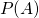 来表示该事件发生的可能性
大小，称为随机事件 的 概率
关于概率和频率的关系，现在有如下命题待证明：
命题1 （频率和概率）：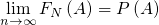
2 概率论的基本概念
2.1 样本空间
随机试验中可能出现的结果称为 样本点 ，用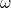 表示。
样本点的全体构成的集合叫作 样本空间 用 表示。
表示。
样本空间可能是有限集，离散可列集，不可列集，或者多维空间。
2.2 事件
有了样本空间，我们用集合的观点来定义事件：如果 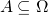 ，则称 是样本空间 上的一个 事件 。样本空
间上所有事件的集合可记作 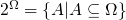
是样本空间 上的一个 事件 。样本空
间上所有事件的集合可记作 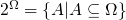
一个事件 发生 当且仅当它所包含的某个样本点出现。
- 样本空间
 本身作为一个事件，每次试验必然发生，称为 必然事件
本身作为一个事件，每次试验必然发生，称为 必然事件
- 空集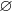 也可作为一个事件，每次试验都不会发生，称为 不可能事件
2.3 事件的关系和运算
和集合之间的关系类似，我们可以定义事件之间的关系：
- 事件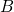 包含 事件
 , 记作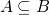 或者 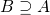 是指： 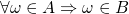
, 记作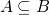 或者 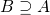 是指： 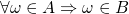
对于任何事件 显然有: 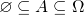
- 事件
 与事件
与事件 相等 ， 记作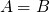 是指:
相等 ， 记作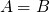 是指:  并且 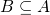
并且 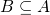
- 事件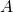 的 逆事件 或者 对立事件 记作 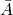 : 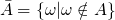
显然一个事件和其对立事件在同一次试验能只能发生其一。
3 公理概率论和概率空间
3.1 基本概念
3.1.1 样本空间
3.1.2 事件域
3.1.3 概率的形式定义
定义: 定义在事件域 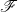 上的实值函数 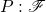
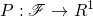
4 随机变量
4.1 离散型随机变量
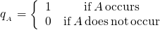 0 & \tmop{if} A \tmop{does} \tmop{not} \tmop{occur} \end{array} \right.$$"/>
4.2 连续型随机变量
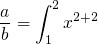